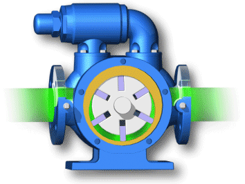
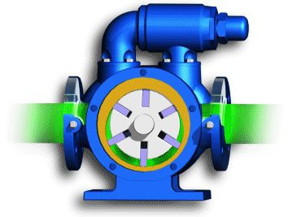

<div class="texag">
  <div class="capa11">
    <h4>Estatus de la Temperatura del Agua: {{ lastValue }}</h4>
  </div>
</div>
<div class="graag">
  <div class="capa1">
    <canvas
      baseChart
      [datasets]="lineChartData"
      [labels]="lineChartLabels"
      [options]="lineChartOptions"
      [colors]="lineChartColors"
      [legend]="lineChartLegend"
      [chartType]="lineChartType"
      [plugins]="lineChartPlugins"
    >
    </canvas>
  </div>
</div>

<div class="graag2">
  <div class="capa2" style="text-align: center">
    <h2 *ngIf="bombaStatus">Estatus Bomba: On</h2>
    <h2 *ngIf="!bombaStatus">Estatus Bomba: Off</h2>

    
    
  </div>
</div>

<div class="estamb1">
  <div class="capa11">
    <h4>
      <a
        [routerLink]="['/home']"
        routerLinkActive="router-link-active"
        class="close-sesion"
        >Regresar a la Pagina Anterior</a
      >
    </h4>
  </div>
</div>
